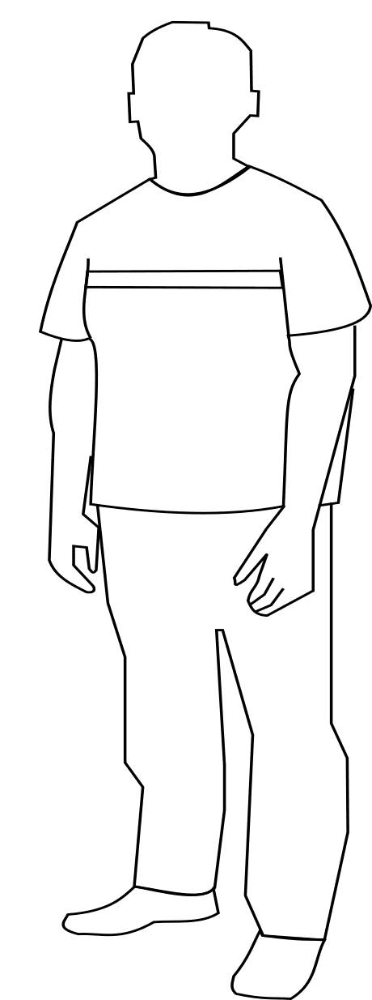
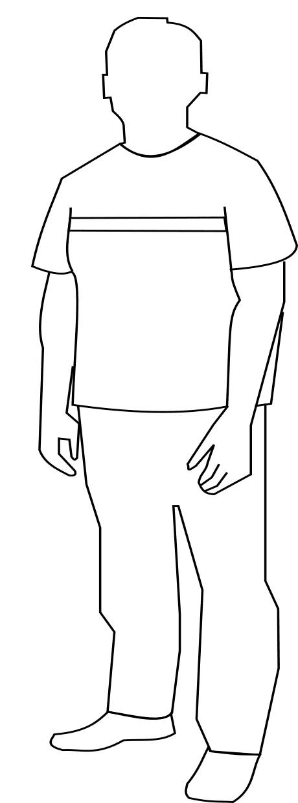
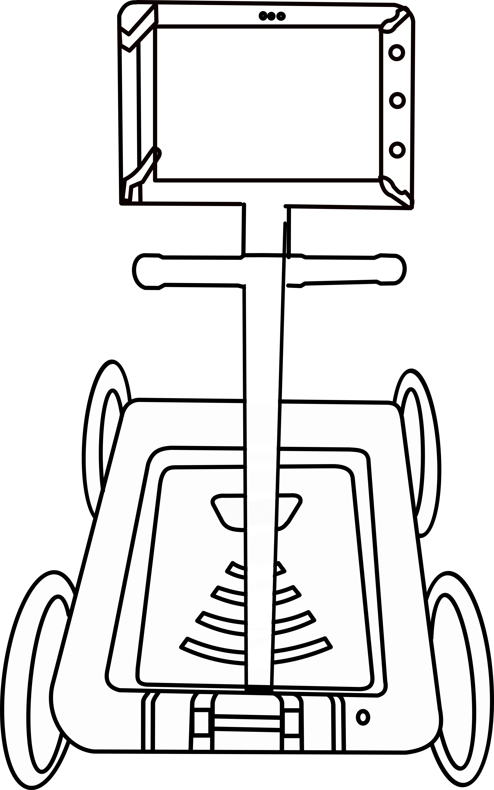
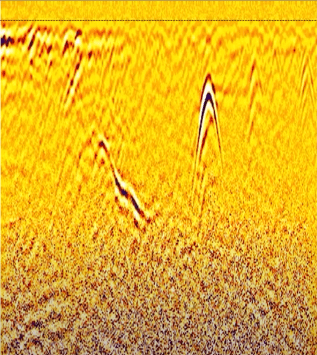

SUBSURFACE IMAGING USING GROUND PENETRATING RADAR (GPR) FOR UTILITY MAPPING
Objective:
Subsurface imaging using Ground Penetrating Radar (GPR) for utility mapping.
Apparatus used:
Ground Penetrating Radar Device.
 

Description
Ground Penetrating Radar (GPR) is a non-destructive geophysical technique that uses high-frequency electromagnetic waves to investigate subsurface structures and materials. It can be used for utility mapping to locate and identify buried utilities, such as pipes and cables.
Press the button to Switch On.
Unfold the holding arm of the Ground Penetrating Radar Device and open the tablet holder.
Place the tablet on the holder of the Ground Penetrating Radar Device and then connect the cable.
Front View
Back View
Switch on the tablet, click on the settings icon to setup the instrument for data collection.

Setting Up Antenna
Gain.....
Setting Up Antenna
depth


Click on the new job to create a new folder & start data collection.
Click on the start button to start collecting data for the required length of the ground.
The data collected can be viewed,increase the contrast of the data to easily identify the utilities mapped.
Find the various utilities that have been mapped in the data collected.
Click on the top of the convex shapes appearing on the data set as they are the signature for different pipes & cables present under ground.
Utility 1
Utility 2
Result
Two utilities have been found in the data set.
Utility 1 - Depth of 0.96m & a Horizontal distance of 22.50m
Utility 2 - Depth of 0.33dm & a Horizontal distance of 13.50m
Click on the new job to create a new folder & start data collection.
Do all the intial settings done in step 3 and 4.
Click on the start button to start collecting data for the required length of the ground.
Find the various utilities that have been mapped in the data collected.
Click on the top of the convex shapes appearing on the data set as they are the signature for different pipes & cables present under ground.
Gas Pipe
Electrical Cable
Water Reticulation Pipe
Result
Three utilities have been found in the data set.
Gas Pipe - Depth of 0.96m & a Horizontal distance of 31.50m
Electrical Cable - Depth of 1.60m & a Horizontal distance of 27.00m
Water Reticulation Pipe - Depth of 1.29m & a Horizontal distance of 22.50m